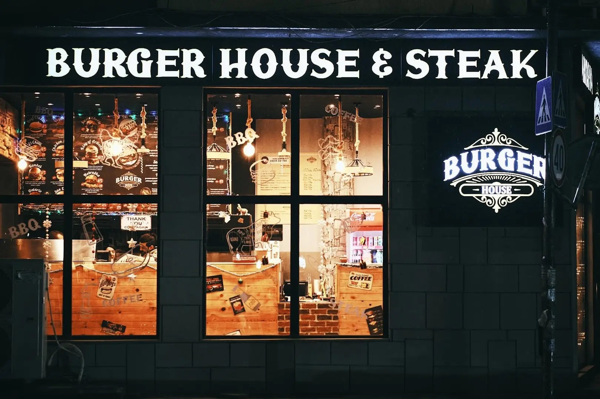
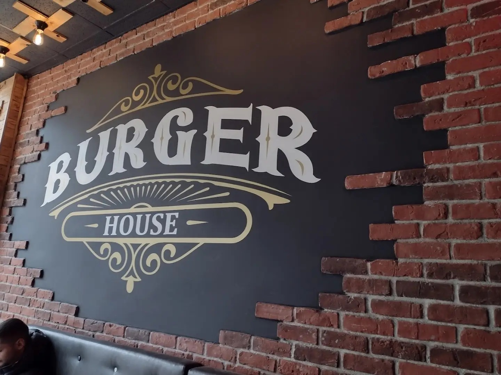
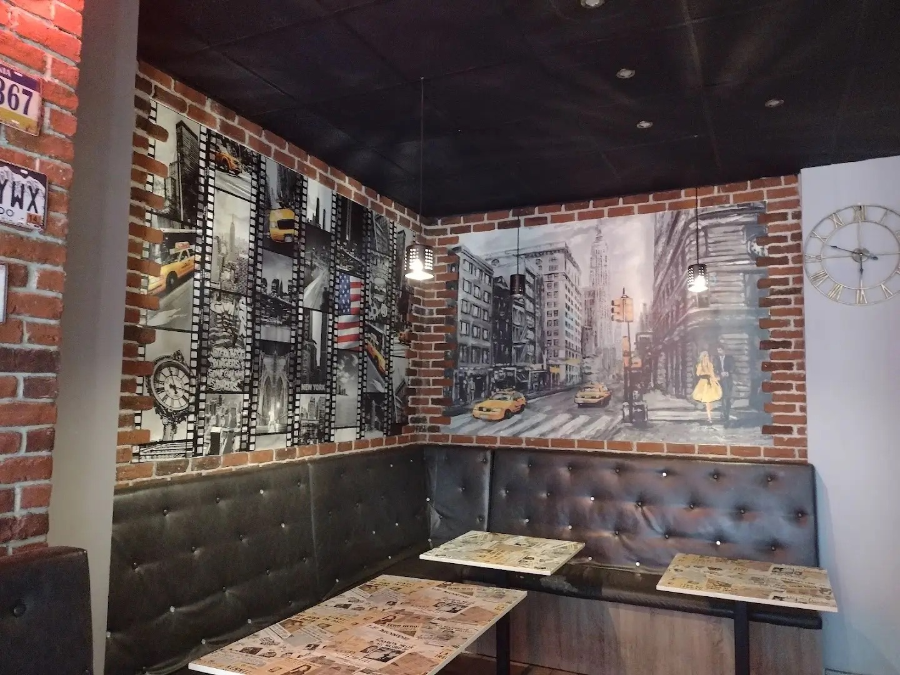
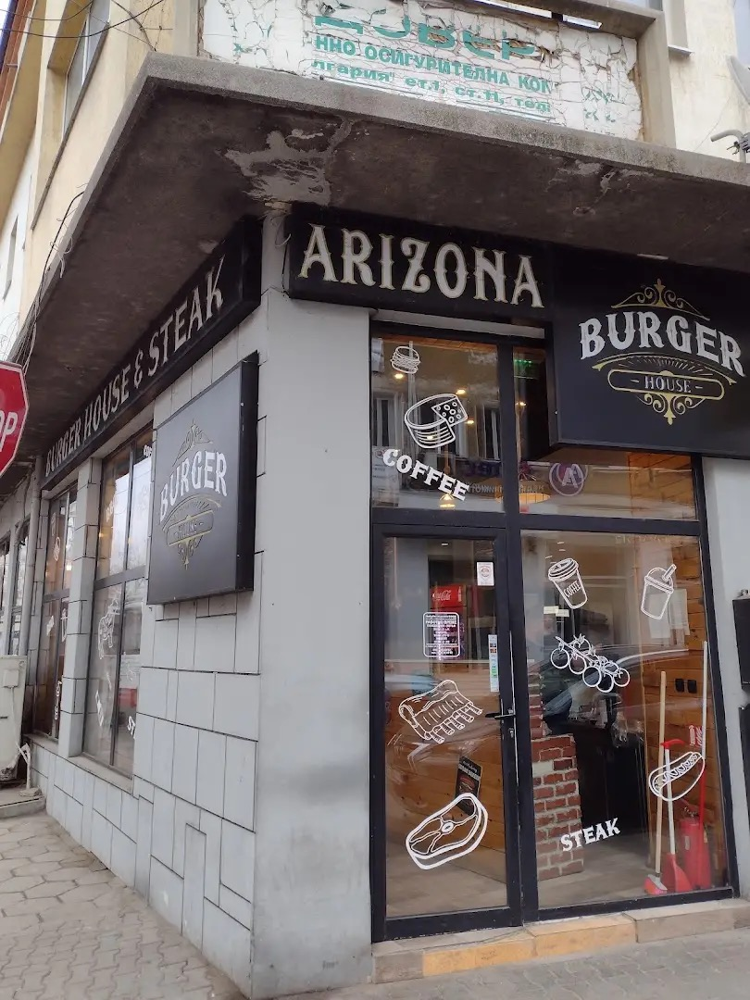
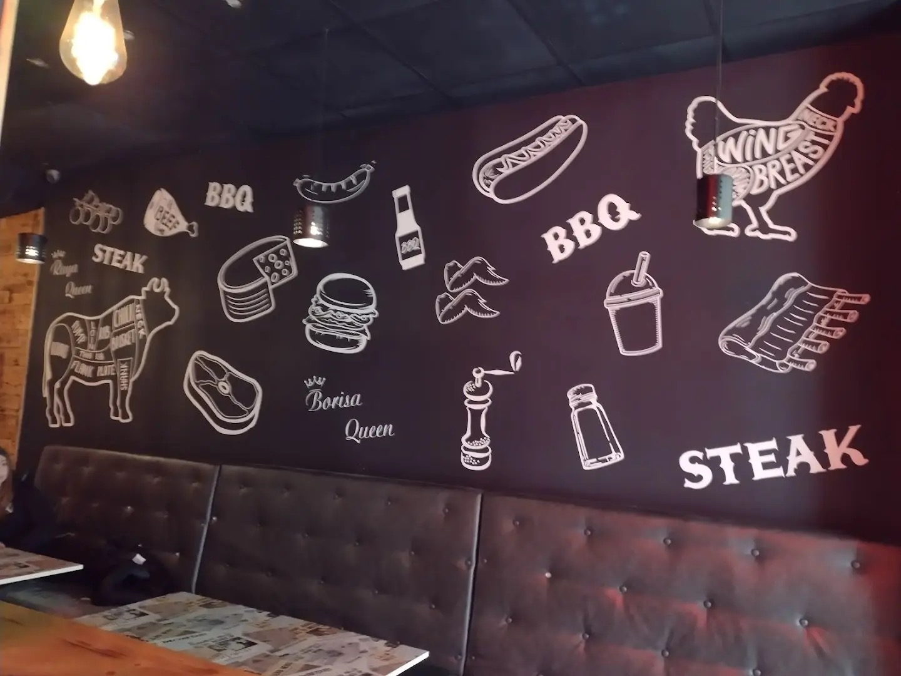
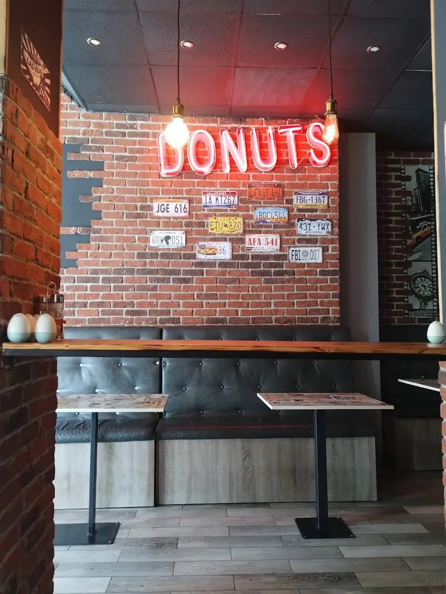

King of Arizona Фирмен
Нашият знаков бургер — с истински американски характер.

Сочни бургери на скара, крехки стекове, тортили и хрупкави картофки, поднесени в автентична американска атмосфера на ул. „Цар Иван Александър“ 4.
В Burger House Arizona предлагаме разнообразие от сочни бургери, придружени от гарнитури като хрупкави картофки и разхладителни напитки. Атмосферата е приятна и спокойна, издържана в типичен американски стил, който допълва цялостното изживяване.
Мястото е подходящо както за посещение на място, така и за поръчки за вкъщи — доставките са бързи и безпроблемни. Работим до късно, което е удобство за всеки, който търси вкусна храна и в по-късните часове.
Обслужването е високо оценено от гостите ни, които споделят за любезен и отзивчив персонал. Заповядайте в центъра на Ямбол, на ул. „Цар Иван Александър“ 4, под хотел „България“.

Три причини гостите да се връщат отново и отново.
Разнообразие от сочни бургери — от класически говежди до фирмени специалитети като King of Arizona, San Diego и Mr Egg.
Крехки стекове на скара, поднесени с ориз и печени зеленчуци — сърцето на нашата „Burger House & Steak“ кухня.
Поръчай на място или онлайн — доставяме бързо и безпроблемно из Ямбол чрез платформите за доставка.
Атмосферата и ястията, които ви очакват в центъра на Ямбол.

Заведението
Уютни боксове
American vibe
Неон & тухлиНад 185 отзива в Google. Ето какво открояват най-често.
„Бургерите са страхотни — едни от най-добрите в града. Приятна атмосфера и любезен персонал.”
„Бърза доставка и вкусна храна. Американският стил на мястото допълва цялото изживяване.”
„Перфектно приготвени бургери и бързо обслужване. Определено ще се върна отново.”